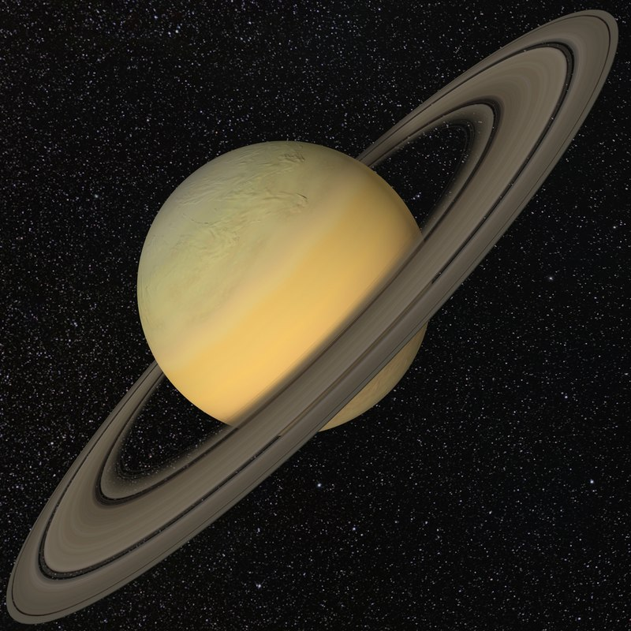

Would you like to sign up for our newsletter? X
Register for our site!
Some Random Space FAQs!
- Space FAQs 1)
- Uranus is tilted on its side
- Space FAQs 2)
- Except for the Earth, the planets are named after gods from Roman and Greek mythology
- Space FAQs 3)
- There are an estimated 100-400 billion stars in our galaxy, the Milky Way
- Space FAQs 4)
- Venus has super-powerful winds
- Space FAQs 5)
- Rings are everywhere in the solar system
- Space FAQs 6)
- Neptune radiates more heat than it gets from the sun
- Space FAQs 7)
- The solar atmosphere is much hotter than the surface
- Space FAQs 8)
- Venus is the hottest planet in our solar system with a surface temperature of over 450 degrees celcius
- Space FAQs 9)
- The only planet that rotates on its side like a barrel is Uranus
- Space FAQs 10)
- The only planet that spins backwards relative to the others is Venus
Venus Facts
- One day on Venus is longer than one Earth year
- The temperature on Venus doesn't vary much between night and day
- Venus has a weak magnetic field
- Venus is the second brightest natural object in the sky
Saturn Facts
- Saturn gives off more energy than it receives from the Sun
- Saturn is the least dense planet in the solar system
- Saturn has 150 moons and smaller moonlets
- Saturn is known as a gas giant, but scientists believe it has a solid rocky core
Neptune Facts
- Neptune has a storm similar the Great Red Spot on Jupiter
- Neptune has 14 known moons
- Neptune is the Roman God of the Sea
- It takes Neptune 164.8 Earth years to orbit the Sun
